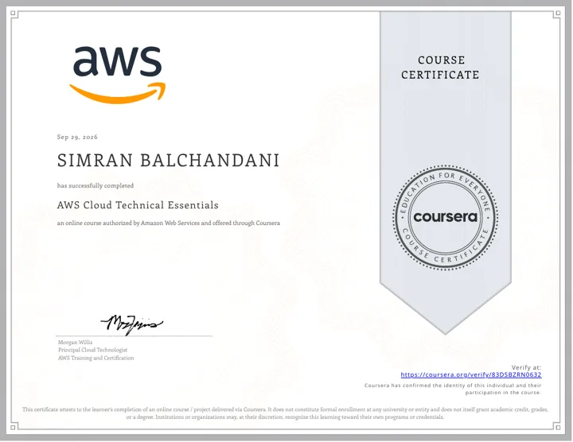
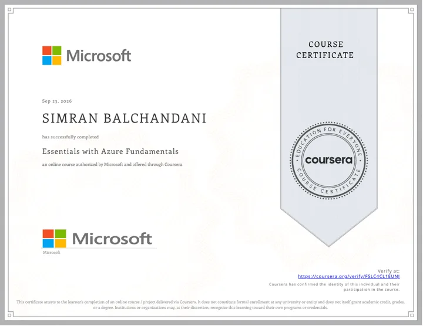
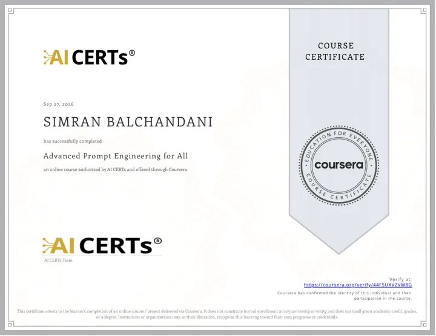

- MBA (Tech) Data Science
- MPSTME, NMIMS
- 2024 to 2029
- Mumbai
Simran Balchandani
I'm a data science student who learns by building. So far that means a hospital appointment platform on AWS, a flight operations dashboard, and now a satellite study of Rajkot's restored lakes.
- Studying
- MBA (Tech) Data Science, 2024 to 2029
- Interning
- Web design at DVAB Labs, since May 2025
- Writing
- A GIS paper on Rajkot's lakes (in progress)
About
A little about me
I enjoy learning through hands-on projects, and data science interests me because it helps turn raw information into useful insights.
I'm Simran, and I'm studying MBA (Tech) in Data Science at MPSTME, NMIMS (2024 to 2029). I went to school in Rajkot and now study in Mumbai.
I learn best through hands-on projects. Data science interests me because it turns raw information into something useful, and I'm most curious about problems where data can help people make better decisions, whether that's a clinic booking system or a flight desk keeping track of delays.
Beyond projects, I'm interning on web design at DVAB Labs, writing a GIS research paper, and taking part in student committees. I'm looking towards roles in data science, AI strategy and technology management.
- Studying
- MBA (Tech) in Data Science, MPSTME, NMIMS
- Based in
- Mumbai, India
- Interested in
- Data science, AI strategy, technology management
- Outside class
- Travel, music, football
When I'm not studying
- Travel and musicOutside of studying and building, travel and music are what I enjoy.
- On the fieldGoalkeeper for my school football team. 2nd in the 200 m race and 3rd in the relay.
- WordsRunner-up in a spelling bee competition (2023).
Projects
Things I've built
Two finished builds and one study still in progress. Each one says what it does, what it's made with and what I learned. Select a title to open it.
Featured projects
Inside MediCloud v2 Sample data, not real patients
Skills
What I work with
Filled tags are tools I used in the projects above. Outlined tags are on my CV but not in a project on this page.
Skills by area
Programming
Data and analytics
Cloud and web
Tools
Currently learning
Google Earth Engine and satellite remote sensing (Landsat and Sentinel-2) for my GIS paper.
Which tool went into which project?
Tap a project to light up its tools, or tap a tool to see where I used it. Only tools I actually used in a project are here.
Nothing selected. JavaScript is the one tool both projects share.
Education
Education, experience and courses
Education
2024 to 2029
MBA (Tech) in Data Science
Mukesh Patel School of Technology Management and Engineering (MPSTME), NMIMS, Mumbai. Expected graduation: 2029.
2022 to 2024
Premier School, Rajkot
11th and 12th grade, Rajkot, Gujarat.
2009 to 2022
Saint Paul's School, Rajkot
Up to 10th grade, Rajkot, Gujarat.
Experience and student life
May 2025 to present
Web Design Intern, DVAB Labs
DVAB Labs is a technology company building software for the jewellery industry. I assist the team with the design of its website and with software engineering problems.
2022 and 2024
Volunteer Teacher, Sadhu Vaswani Centre (Saurashtra), Rajkot
Taught basic trigonometry and science to roughly 200 school-age students across two teaching stints, explaining ideas in simple, clear language.
2024 to 2026
Student committees at MPSTME
- IETE-SF: In-House Creatives, Senior Executive (2025-26)
- Social Conclave: Informals Executive (2025-26)
- SATTVA: Marketing Executive (2024-25)
Courses and certificates Four online courses I completed through Coursera in September 2026. Each has a completion certificate you can open or verify.
-

Open the certificate PDF (opens in a new tab) Amazon Web ServicesAWS Cloud Technical Essentials
Completed Sep 29, 2026
Certificate (PDF) for AWS Cloud Technical Essentials, opens in a new tab Verify on Coursera for AWS Cloud Technical Essentials, opens in a new tab
-

Open the certificate PDF (opens in a new tab) MicrosoftEssentials with Azure Fundamentals
Completed Sep 23, 2026
Certificate (PDF) for Essentials with Azure Fundamentals, opens in a new tab Verify on Coursera for Essentials with Azure Fundamentals, opens in a new tab
-

Open the certificate PDF (opens in a new tab) AI CERTsAdvanced Prompt Engineering for All
Completed Sep 27, 2026
Certificate (PDF) for Advanced Prompt Engineering for All, opens in a new tab Verify on Coursera for Advanced Prompt Engineering for All, opens in a new tab
-
Open the certificate PDF (opens in a new tab)
AI CERTs
Managing Projects with AI
Completed Sep 22, 2026
Certificate (PDF) for Managing Projects with AI, opens in a new tab Verify on Coursera for Managing Projects with AI, opens in a new tab
Contact
Let's talk
If you'd like to talk about data, a project or an opportunity, send me an email. I'm happy to hear from you.